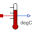

MotorSecond order thermal model of a motor |
|
Diagram
{kind=link}
Information
This information is part of the Modelica Standard Library maintained by the Modelica Association.
This example contains a simple second order thermal model of a motor. The periodic power losses are described by table "lossTable":
| time | winding losses | core losses |
| 0 | 100 | 500 |
| 360 | 100 | 500 |
| 360 | 1000 | 500 |
| 600 | 1000 | 500 |
Since constant speed is assumed, the core losses keep constant whereas the winding losses are low for 6 minutes (no-load) and high for 4 minutes (over load).
The winding losses are corrected by (1 + alpha*(T - T_ref)) because the winding's resistance is temperature dependent whereas the core losses are kept constant (alpha = 0).
The power dissipation to the environment is approximated by heat flow through
a thermal conductance between winding and core,
partially storage of the heat in the winding's heat capacity
as well as the core's heat capacity and finally by forced convection to the environment.
Since constant speed is assumed, the convective conductance keeps constant.
Using Modelica.Thermal.FluidHeatFlow it would be possible to model the coolant air flow, too
(instead of simple dissipation to a constant ambient's temperature).
Simulate for 7200 s; plot Twinding.T and Tcore.T.
Parameters (1)
| TAmb |
Value: 293.15 Type: Temperature (K) Description: Ambient temperature |
|---|
Components (11)
| lossTable |
Type: CombiTimeTable |
|
|---|---|---|
| windingLosses |
Type: PrescribedHeatFlow |
|
| winding |
Type: HeatCapacitor |
|
|  | Twinding |
Type: TemperatureSensor |
| winding2core |
Type: ThermalConductor |
|
| coreLosses |
Type: PrescribedHeatFlow |
|
| core |
Type: HeatCapacitor |
|
| Tcore |
Type: TemperatureSensor |
|
| convectionConstant |
Type: Constant |
|
| convection |
Type: Convection |
|
| environment |
Type: FixedTemperature |